Ukraine: The Education Industry: Strategic Analysis and Market Outlook
Ukraine
The Education Industry: Strategic Analysis and Market Outlook
2021 Report
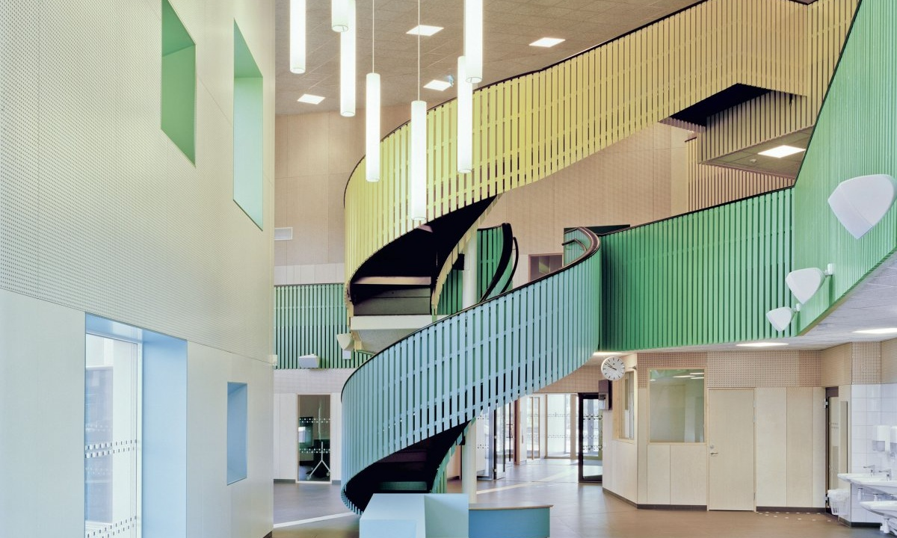
Prepared for: Private Client
Prepared by: Scott Harmer
October 2021
Executive Summary
This report recommends that the client establish a premium international school in Kyiv. The school should offer a British curriculum, teach 750 pupils aged 3 to 18, and operate from a purpose-built campus.
The Market
Demand for premium international education in Kyiv is strong and growing. The three leading international schools, Kyiv International School, Pechersk School International and the British International School Ukraine, each teach more than 500 pupils. Their annual fees are mostly between US$20,000 and US$30,000.
Private education is also expanding quickly. The number of pupils in Ukrainian private schools rose by about 175% between 2014/15 and 2020/21, with the largest concentration in Kyiv. Rising incomes in the IT sector and money sent home by Ukrainians working abroad are increasing the number of families who can pay premium fees.
The Proposal
The recommended school would compete directly with the market leaders. It would offer Cambridge qualifications (IGCSE and A Level) and could add the International Baccalaureate Diploma at a later stage. Annual fees would range from US$14,000 in the early years to US$27,000 in the final two years, in line with existing schools. Two lower-priced models were also assessed (Section 5). They earn a higher percentage return, but on a much smaller investment and in a more crowded market. Only the premium model can use the client’s capital at scale, generate the largest profit and create a valuable property asset.
| Headline Figures | |
|---|---|
| Total investment | US$23.1 million |
| Land | US$6.0 million |
| Construction, sports facilities, furniture, fees and contingency | US$15.6 million |
| Pre-opening costs (recruitment, accreditation, marketing) | US$1.5 million |
| Proposed opening date | September 2024 |
| Annual revenue at full operation (675 pupils, from year 6) | US$13.7 million |
| Annual operating profit (EBITDA*) at full operation | US$5.3 million (38% of revenue) |
| Operating break-even | about 230 pupils |
| Payback period from opening | about 8 years (after tax) |
| Annual return over 20 years (IRR**) | about 14%, after tax |
* EBITDA: earnings before interest, tax, depreciation and amortisation. ** IRR: internal rate of return, including the value of the land and buildings after 20 years. Based on a single for-profit company; alternative legal structures are assessed in Section 6.7.
Conditions for Proceeding
- Secure a site of 2.5 to 3 hectares with clear legal title and the necessary permits.
- Set fees in US dollars to protect income against devaluation of the hryvnia.
- Obtain Cambridge registration and a Ministry of Education and Science licence before opening.
- Appoint an experienced head of school at least 18 months before opening.
- Accept a payback period of about eight years.
- Obtain advice from a Ukrainian tax specialist on the legal structure before buying land.
Main Risks
The main risk is political. The conflict with Russia in eastern Ukraine has continued since 2014, and the build-up of Russian troops in spring 2021 showed that it could escalate. Escalation would reduce enrolment, especially among international families. Other risks are slower enrolment, currency devaluation and the recruitment of international teachers. If enrolment grows more slowly than planned, payback could take about eleven years (Section 7).
Part 1: Client Decision Report
1 Recommendation
This report recommends that the client invest in a premium international school in Kyiv. The opportunity is attractive for an investor with substantial capital, a long-term horizon and a tolerance for country risk.
1.1 Should the Client Invest?
Yes, provided that the conditions in Section 1.4 are met. Four findings support this recommendation.
- Demand is proven. The three leading international schools in Kyiv each teach more than 500 pupils, and most of their fees exceed US$20,000 a year. Families in Kyiv are already paying premium fees in large numbers.
- The market is growing. The number of pupils in Ukrainian private schools rose by about 175% between 2014/15 and 2020/21. Kyiv has the highest concentration of private schools and the highest household incomes in Ukraine.
- Accredited supply is limited. Seven schools in Ukraine describe themselves as international, but only three offer International Baccalaureate programmes, and all three are in Kyiv. A new, fully accredited school with modern facilities would compete with only a small number of established providers.
- The financial case is strong. At full operation, the school would generate an operating profit of about US$5.3 million a year. It would repay the initial investment in about eight years and return about 14% a year over 20 years, after tax.
The investment also carries significant risks. The most serious is the conflict with Russia, which has continued in eastern Ukraine since 2014. A major escalation could cause international families to leave and could damage the value of the investment. The client should proceed only if it can accept this risk (Section 7).
1.2 Recommended Model
Three models were assessed: Entry, Mid and High (Section 5). This report recommends the High model, a premium international school, because it makes the best use of the capital available to the client and produces the largest profit. The lower-priced models earn a higher percentage return, but on a much smaller investment (Section 5.1).
| Feature | Recommended model |
|---|---|
| Type of school | Premium international day school, ages 3 to 18 |
| Curriculum | British curriculum with Cambridge qualifications: Cambridge Primary, Lower Secondary, IGCSE and A Level |
| Later options | International Baccalaureate Diploma; Ukrainian state programme for families who need Ukrainian certificates |
| Language of instruction | English, with Ukrainian as a taught subject |
| Capacity | 750 pupils, with an expected long-term enrolment of 675 (90%) |
| Campus | Purpose-built, about 10,000 square metres on a site of 2.5 to 3 hectares on the edge of Kyiv |
| Annual tuition | US$14,000 (early years) to US$27,000 (final two years) |
| Teaching staff | About 89 teachers at full operation, about 80% of them international |
| University guidance | A dedicated office and staff to support university applications abroad and approved international summer programmes (Section 5.6) |
| Proposed opening | September 2024 |
A British curriculum offers three advantages. First, Cambridge registration takes months rather than years, so the school can open with recognised qualifications. Second, Cambridge provides a complete pathway from age 5 to 18. Third, A Levels are accepted by universities in the United Kingdom, across Europe and in North America, which are the main destinations for Ukrainian students who study abroad.
The new school would also differ from its competitors in one important way: it would have the newest purpose-built campus in Kyiv. In the parent survey for this report, buildings and facilities were the most common complaint about existing schools (Section 2.4).
1.3 Headline Figures
The school would reach its long-term enrolment of 675 pupils in its sixth year. It would cover its operating costs from the first year and repay the full investment during the eighth year after opening. Figure 1 shows the investor’s cumulative cash position over 20 years.
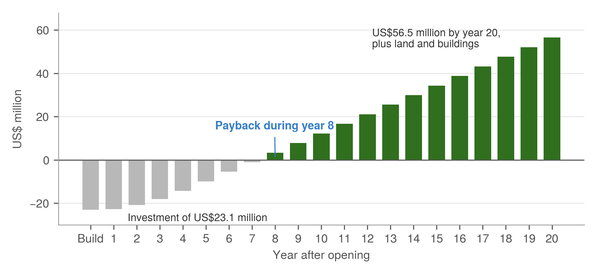
1.4 Conditions for Proceeding
The recommendation depends on six conditions. If any of them cannot be met, the client should review the decision before committing further capital.
| Condition | Why it matters | When |
|---|---|---|
| 1. Secure a site of 2.5 to 3 hectares with clear legal title and the necessary permits | Land disputes and permit delays are common in Kyiv and could delay opening by a year or more | Before purchase |
| 2. Set fees in US dollars | Protects income against devaluation of the hryvnia; most costs are linked to the dollar | Before admissions open |
| 3. Obtain Cambridge registration and a Ministry of Education and Science licence | The school cannot open or issue recognised qualifications without them | Before opening |
| 4. Appoint an experienced head of school | Parents choose schools on reputation; an experienced head attracts both families and teachers | At least 18 months before opening |
| 5. Accept a payback period of about eight years | Schools take five to six years to fill; returns come late | At the decision stage |
| 6. Obtain advice from a Ukrainian tax specialist on the legal structure | The choice between a for-profit and a non-profit structure affects tax and investor returns | Before buying land |
2 Is There Demand?
Yes. Demand for premium international education in Kyiv is proven, it is growing, and it is supported by rising incomes among the families who pay for it.
| +175% | 1 in 5 | 1,500+ | $20,000+ |
| growth in private-school pupils in Ukraine, 2014/15 to 2020/21 | schools in Kyiv is private, compared with 1 in 50 nationally | pupils at the three leading international schools | typical annual fee (US dollars) at those schools |
2.1 Growth of Private Education in Kyiv
Private education in Ukraine is still small, but it is growing quickly. In October 2021, Ukraine had 320 licensed private schools, about 2% of all schools in the country. Between 2014/15 and 2020/21, the number of pupils in private schools rose by about 175%.
This growth is concentrated in the capital. Of these, 108 are in Kyiv, which means that about one in five schools in the capital is private, compared with about one in fifty nationally. By 2018, Kyiv city and region already had 134 registered private schools. Kyiv also has the highest household incomes in Ukraine and the largest international community.
Two factors explain this growth. First, many parents are dissatisfied with state schools, especially with large classes and old buildings. Second, more families can now afford private fees, because of rising incomes in the IT sector and money sent home by Ukrainians working abroad (Annex A).
2.2 Enrolment at Existing International Schools
The three leading international schools are well established, and each teaches more than 500 pupils.
| School | Founded | Curriculum | Pupils (2021) |
|---|---|---|---|
| Kyiv International School | 1992 | American, with Advanced Placement and IB Diploma | More than 500 |
| Pechersk School International | 1995 | International Baccalaureate (Primary, Middle Years and Diploma) | More than 500 |
| British International School Ukraine | 1997 | British, with Cambridge and Edexcel examinations and A Levels | More than 500, across campuses in Kyiv and Dnipro |
All three are non-profit schools that were founded in the 1990s to serve diplomatic and business families. Over time, Ukrainian families have become an important part of their intake, which shows that demand no longer depends on the international community alone.
2.3 Families Paying US$20,000 or More
More than 1,500 pupils already attend schools charging around US$20,000 or more a year. This represents annual spending of more than US$30 million on premium international education in Kyiv. Several private schools with Ukrainian or blended programmes also have more than 300 pupils, and some of their families are likely to move to an international school as their incomes rise.
Many Ukrainian families also spend more than this to educate their children abroad. Fees at boarding schools in the United Kingdom and Switzerland usually exceed US$45,000 a year, before travel and living costs. According to CEDOS, about 77,400 Ukrainians were studying at foreign universities in 2016/17, and at least 83,000 in 2017/18. Almost half of them studied in Poland. A high-quality school in Kyiv that prepares pupils for these universities offers families a lower-cost alternative to sending children abroad at an early age.
To reach its long-term enrolment of 675 pupils, the new school would need a substantial share of this market. It would therefore draw on three sources: growth in the market, families who would otherwise choose a school abroad, and families who move from private or international schools to a newer campus.
2.4 What Parents Want: Survey Findings
An exploratory survey of 23 Kyiv parents was carried out for this report. Because the sample is small, the results show priorities and patterns rather than market shares. The full method and results are in Annex D.
- Families already pay premium fees. About 30% of respondents paid between US$10,000 and US$20,000 a year per child, and 4% paid US$30,000 or more. These families wanted stronger English, international examinations and access to universities abroad. The proposed school would meet this need through a dedicated office that supports pupils with university applications and approved international summer programmes (Section 5.6).
- Location and reputation decide the choice of school. 52% of parents chose their school because it was close to home, and 48% because of its reputation. Site selection and early reputation-building will therefore be critical.
- Facilities are the main weakness of existing schools. 48% of parents disliked their school’s buildings and classrooms, more than any other factor (Figure 2). A new purpose-built campus would address this directly.
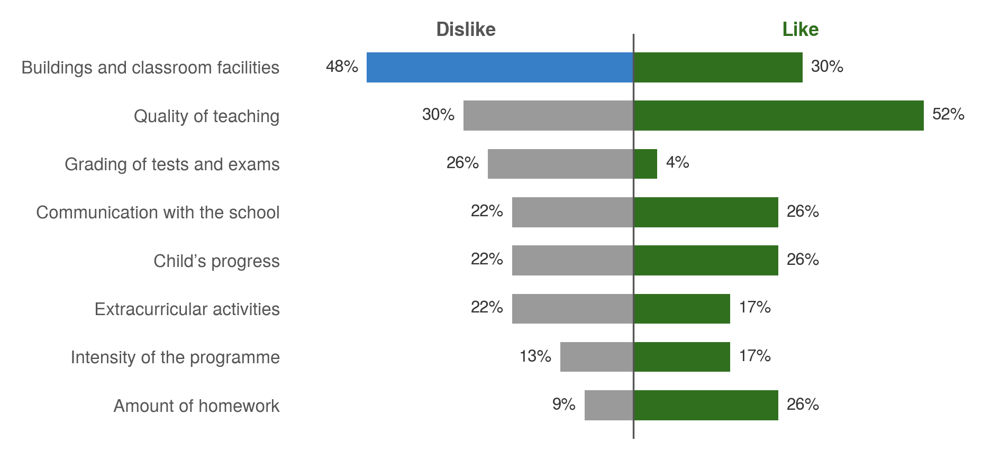
Teaching quality was the factor that parents liked most (52%). A new school must therefore recruit excellent teachers to compete with the established schools, as well as offer better facilities.
3 Who Are the Competitors?
The premium market in Kyiv is led by three established international schools. The new school would compete with them directly, but it can differ through its curriculum, its facilities and its location.
3.1 The Three Major International Schools
Kyiv International School, Pechersk School International and the British International School Ukraine are the main competitors. Each has more than 20 years of experience, a strong reputation and a large enrolment (Table 3, Section 2.2). Table 4 summarises how the proposed school would differ from each of them.
| School | Location | Main strengths | How the proposed school would differ |
|---|---|---|---|
| Kyiv International School | Sviatoshynskyi district (west) | Long track record since 1992; Advanced Placement and IB Diploma | British curriculum, which suits families aiming for universities in the United Kingdom and Europe; newer campus |
| Pechersk School International | Holosiivskyi district (south) | Full IB programme from primary to Diploma level; strong academic reputation | Cambridge qualifications as an alternative to the IB, suited to families aiming for universities in the United Kingdom |
| British International School Ukraine | Nyvky and Pechersk (Kyiv); Dnipro | First British school in Ukraine; A Levels; member of the Council of British International Schools | A single, purpose-built campus with modern facilities, in a part of the city that has no leading international school |
The British International School is the most direct competitor, because it offers the same curriculum. The new school would therefore need to compete on facilities, location and the quality of its teachers rather than on curriculum alone.
3.2 Other Schools Using the Term “International”
In 2021, seven schools in Ukraine described themselves as international. Only the three schools above offered International Baccalaureate programmes, and all three are in Kyiv. The other schools fall into three groups:
- National schools for expatriate communities, such as the French school in Kyiv, which follow the curriculum of another country and mainly serve its citizens.
- Faith-based and community schools, including American-curriculum schools with a religious character and schools founded by particular national communities. Other well-known private schools, such as Meridian International School, also use the term.
- Private schools that use “international” in their name but do not hold recognised international accreditation. Their accreditation is often difficult to verify.
These schools are not direct competitors at the premium level. However, they show that the word “international” alone does not guarantee quality. The new school should therefore promote its recognised accreditation clearly from the start (Section 4).
3.3 Leading Private Schools
Kyiv had 108 licensed private schools in 2021. Most follow the Ukrainian curriculum with additional hours of English or German, and several of the leading schools have more than 300 pupils. Average fees are about US$4,200 a year, between US$3,300 and US$8,000. Additional charges for clubs, registration and external examinations can add up to US$2,000 a year.
These schools serve a different market from the proposed school. However, some of their families will want an international education as their incomes rise. For these families, the new school would be a natural next step, especially if it offers a Ukrainian programme as an option (Section 5.2).
3.4 Fee Comparison and Gaps in the Market
The proposed fees of US$14,000 to US$27,000 a year place the new school within the range of the established international schools and well below the cost of schools abroad (Figure 3).
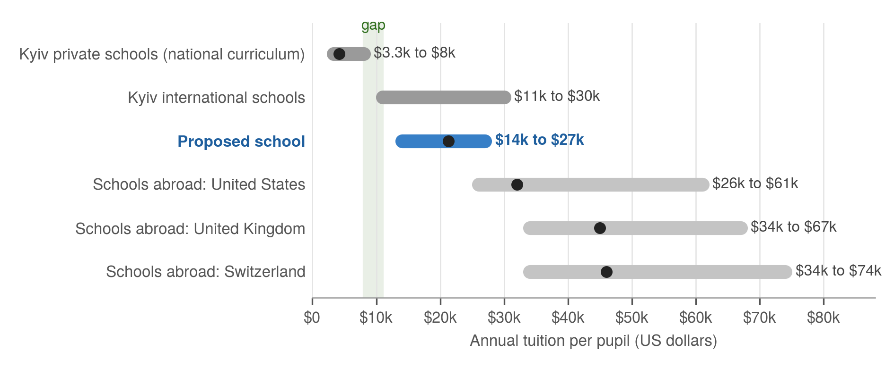
Two points stand out. First, there is a clear gap between US$8,000 and US$11,000 a year, between the most expensive private schools and the least expensive international schools. This gap could be served by the lower-priced Mid model (Section 5.1). Second, families who send a child to school abroad pay at least US$26,000 a year in tuition alone, plus travel and living costs. The proposed school offers these families a similar standard of education at a much lower total cost, while the child remains at home.
3.5 Competitor Locations and Underserved Districts
All three leading international schools are on the right bank of the Dnipro, in the west, centre and south of the city (Figure 4). The left bank, where about one third of Kyiv’s population lives, has no leading international school. The northern district of Obolon is also some distance from the existing campuses.
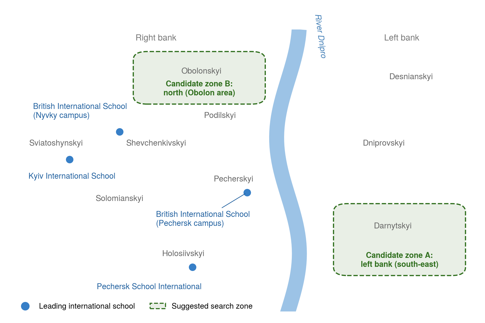
In the parent survey, 52% of parents chose their school mainly because it was close to home (Section 2.4). A campus in an underserved area would therefore have a clear advantage. This report suggests two search zones: the south-east of the left bank, which also has good road access to Boryspil International Airport, and the north of the city around Obolon. Both zones have newer residential developments and more land available for a campus of 2.5 to 3 hectares. The final choice should be based on land availability, travel times and the location of target families, and should be confirmed with property agents.
4 Is It Permitted?
Yes. Ukrainian law allows private schools, including schools founded by foreign investors, and there is no separate legal barrier to an international school. The process is bureaucratic and slow, but its costs are low.
4.1 Ukrainian Licensing Requirements
Private schools in Ukraine operate under the Law on Education (2017) and the Law on Complete General Secondary Education (2020). Every fee-paying school needs a licence for educational activity. The licence is issued under the Licensing Conditions for Educational Activity, approved by Resolution No. 1187 of the Cabinet of Ministers of 30 December 2015. For schools in Kyiv, applications are handled by the Kyiv City State Administration.
The main steps are:
- Register the legal entity. A private school can be a for-profit or a non-profit institution, and its founders may be foreign companies or individuals. The choice of structure affects tax (Section 6.7).
- Prepare compliant premises. The building must meet sanitary, building and fire-safety standards before the licence is issued (Section 4.2).
- Apply for the licence. The application covers premises, staffing, curriculum and equipment. Separate licences are needed for pre-school and school education.
- Recruit qualified staff. Ukrainian teachers need recognised teaching qualifications. International teachers need work permits and temporary residence permits (Annex F).
Registration and licence fees are low and are paid in hryvnia. The main cost is time: the full process usually takes 8 to 12 months. The client should appoint a Ukrainian education lawyer at an early stage to manage it.
Ukrainian citizens of school age must obtain complete general secondary education under Ukrainian law. To issue Ukrainian state certificates, a school must teach the State Standard. Many Ukrainian families at international schools therefore follow the Ukrainian programme in parallel with the international curriculum. The proposed school should offer this option (Section 5.2).
4.2 Building and Sanitary Standards
School buildings must meet three sets of rules:
- Sanitary regulations of the Ministry of Health for general secondary schools, revised in 2020 and in force from January 2021. These set requirements for classroom size, lighting, ventilation, catering and medical facilities.
- State building codes for educational buildings, which cover design, access and structural safety.
- Fire-safety rules, which cover evacuation routes, materials and alarm systems.
These rules are detailed and time-consuming, but they are clearly written. Converting an older building to meet them is often expensive, especially for buildings built before independence or designed for housing. A purpose-built campus avoids most of these problems, because the standards can be included in the design from the start.
New construction also needs planning conditions, design approval and construction permits from the city and state construction authorities. The client should allow about 12 months for design and permits and 18 to 24 months for construction.
4.3 International Accreditation Routes
There is no Ukrainian licence for an “international school”. International status comes from accreditation by recognised foreign bodies. Table 5 compares the main options for a British-curriculum school.
| Route | What it provides | Typical time | Indicative cost | Fit |
|---|---|---|---|---|
| Cambridge Assessment International Education | Cambridge Primary, Lower Secondary, IGCSE and A Level programmes and examinations | 3 to 6 months | Registration and annual fees; examination fees paid by families | Essential: before opening |
| Cambridge English exam centre | Cambridge English examinations (such as KET, PET and FCE) on site | A few months | About US$5,000 to set up; recovered from exam fees | Recommended: first year |
| Council of British International Schools (COBIS) | Membership of the main association of British schools abroad | About 1 year | Annual membership fee | Recommended: second year |
| Council of International Schools (CIS) | Internationally recognised accreditation of the whole school | 3 to 5 years | Annual membership of about US$500 to US$8,000, plus evaluation visits | Recommended: medium term |
| International Baccalaureate (IB) | IB Diploma Programme for the final two years | 2 to 3 years | Candidacy and annual fees | Optional: later stage |
| US or Canadian accreditation | An American or Canadian diploma | 12 to 24 months | About US$20,000 (US) or C$15,000 (Canada) | Not recommended |
Cambridge and the IB are separate organisations with different programmes. A school can offer both, but each requires its own approval.
4.4 Recommended Accreditation Pathway
This report recommends that the school opens as an approved Cambridge school with a Ukrainian licence, and then builds its international recognition step by step (Figure 5). By 2028, it should hold CIS accreditation, which would place it on an equal footing with the established schools.
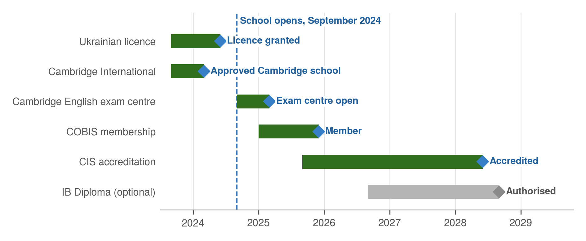
The Ukrainian licence and Cambridge registration must both be in place before the school opens. Without them, it cannot admit pupils or offer recognised qualifications. The IB Diploma is shown as an option: it would allow the school to compete more directly with Pechersk School International, but it is not needed for the school to succeed.
5 What Should Be Built?
This report recommends a premium British-curriculum school for 750 pupils aged 3 to 18, on a purpose-built campus. This section compares the three models that were assessed and describes the recommended school in detail.
5.1 Entry, Mid and High Models Compared
Three models were assessed, at different price levels (Table 6). The Entry and Mid models would operate in leased and converted buildings. The High model would operate on its own purpose-built campus.
| Entry | Mid | High (recommended) | |
|---|---|---|---|
| Position in the market | Upper end of Ukrainian private schools | Bilingual school between private and international schools | Premium international school |
| Curriculum | Ukrainian State Standard with extra English | Ukrainian State Standard plus Cambridge | British curriculum with Cambridge qualifications |
| Annual tuition | US$3,000 to US$6,500 | US$6,000 to US$15,000 | US$14,000 to US$27,000 |
| Capacity | 736 pupils | 688 pupils | 750 pupils |
| Premises | Leased, converted building | Leased, converted building | Owned, purpose-built campus |
| Total investment | about US$1.9 million | about US$3.4 million | about US$23.1 million |
| Annual operating profit at full operation | about US$1.2 million | about US$2.6 million | about US$5.3 million |
| Payback from opening | about 6 years | about 5 years | about 8 years |
| Annual return (IRR, after tax) | about 23% | about 27% | about 14%, including property value |
The Entry and Mid models earn a higher percentage return because they need much less capital. However, they cannot use the client’s capital at scale, they depend on landlords, and they create no property asset. The Entry model also competes in a crowded, price-sensitive market. The High model produces the largest profit, owns its campus and matches the client’s aim of competing with the market leaders.
5.2 Curriculum and Qualifications
The school would follow the British curriculum, taught in English, with Cambridge qualifications from primary to the end of secondary school:
- Early years (ages 3 to 5): a play-based programme based on the English Early Years Foundation Stage.
- Primary (Grades 1 to 5): Cambridge Primary, with English, mathematics, science and a broad range of other subjects.
- Middle (Grades 6 to 8): Cambridge Lower Secondary.
- Grades 9 and 10: Cambridge IGCSE (International General Certificate of Secondary Education) in about eight subjects.
- Grades 11 and 12: Cambridge International AS and A Levels, the main qualification for entry to universities in the United Kingdom and widely accepted elsewhere.
The grades follow Ukrainian numbering. Grade 12 corresponds to Year 13 in the British system, so pupils finish school at 18, at the same age as their international peers.
All pupils would study Ukrainian language and culture. Ukrainian families could also follow the Ukrainian State Standard in parallel, in order to receive a Ukrainian state certificate and keep access to Ukrainian universities through the External Independent Evaluation (ZNO). A second foreign language, such as French, German or Spanish, would be offered from Grade 3. The IB Diploma could be added later as an alternative to A Levels (Section 4.4).
5.3 Class Sizes and Staffing
Small classes are one of the main reasons that families choose premium schools. The school would have two classes in each early-years group and three classes in every other year group (Table 7).
| Stage | Ages | Year groups | Classes per year group | Maximum class size | Capacity |
|---|---|---|---|---|---|
| Early years | 3 to 5 | 3 | 2 | 16 | 96 |
| Primary (Grades 1 to 5) | 6 to 10 | 5 | 3 | 18 | 270 |
| Middle (Grades 6 to 8) | 11 to 13 | 3 | 3 | 18 | 162 |
| IGCSE (Grades 9 and 10) | 14 to 15 | 2 | 3 | 18 | 108 |
| A Level (Grades 11 and 12) | 16 to 17 | 2 | 3 | 19 | 114 |
| Total | 15 | 750 |
At full operation, the school would employ about 176 staff (Table 8). About 80% of teachers would be international, mainly from the United Kingdom, to ensure native-level English and experience of the British curriculum. Ukrainian teachers would teach Ukrainian subjects and the Ukrainian programme.
| Role | Number | Monthly pay (US$) | Notes |
|---|---|---|---|
| International teachers | 73 | 3,000, plus housing worth 1,000 | Includes 6 learning-support and English-language teachers; plus about US$4,000 a year for visas, flights and insurance |
| Ukrainian teachers | 16 | 1,200 | Ukrainian language, literature, history and the Ukrainian programme |
| Classroom assistants | 21 | 1,100 | One for each early-years and primary class |
| Head of school | 1 | 10,000, plus housing | Experienced head of a British international school |
| Senior leaders | 6 | 4,500, plus housing | Deputy heads and heads of the early-years, primary and secondary sections |
| University guidance office | 4 | See Section 5.6 | Head of guidance, two counsellors and a coordinator |
| Support staff | 55 | 700 on average | Administration, admissions, finance, IT, medical, security, maintenance and cleaning |
| Total | 176 | 15 teachers also receive an allowance of US$500 a month as heads of department |
International pay of US$3,000 a month is above the highest rate found in Kyiv in 2021 (US$2,400). This premium is deliberate: the school must attract experienced teachers away from established schools in Kyiv and other countries.
5.4 Campus Requirements
The campus would have about 10,000 square metres of buildings on a site of 2.5 to 3 hectares. In the parent survey, facilities were the most common complaint about existing schools, so the campus is a key part of the school’s appeal (Table 9).
| Area | Main facilities |
|---|---|
| Early years | Separate wing and entrance; classrooms with their own toilets; secure outdoor play area |
| Primary | 15 classrooms; small-group rooms; reading areas |
| Secondary | Classrooms; 6 science laboratories; computer and design rooms; art and music studios |
| Shared facilities | Library and learning centre; auditorium for about 400 people; dining hall and kitchen; medical centre; university guidance office |
| Sports | Sports hall; fitness room; outdoor sports pitch and running track; playgrounds |
| Site and security | Safe drop-off area; bus bays; car parking; controlled entrance; security cameras |
A swimming pool is not included in the cost estimates. It would add significant construction and running costs, but it could be considered as a second-phase project if parents request it.
5.5 Recommended Model
This report recommends the High model: a premium British-curriculum school for 750 pupils on a purpose-built campus in an underserved part of Kyiv. Its main features are:
- Cambridge qualifications from age 5 to 18, with an optional Ukrainian programme;
- small classes and a teaching staff that is about 80% international;
- the newest purpose-built campus in Kyiv, designed to international standards; and
- a dedicated university guidance office (Section 5.6).
Together, these features allow the school to compete directly with the three market leaders while offering families something that none of them currently provides in full: a new campus, a British curriculum and a location close to underserved residential areas.
5.6 University Guidance and International Programmes Office
Families who pay premium fees expect strong support for university entry abroad. The school would therefore have a dedicated office with its own staff. Its main services would be to:
- advise pupils from Grade 9 on their choice of universities, countries and subjects;
- support applications through the main systems, such as UCAS in the United Kingdom and the Common Application in the United States, as well as applications to European universities;
- prepare pupils for admission tests and interviews, and organise university visits and fairs; and
- select and approve international summer camps and courses that meet the school’s standards of safety and quality, and coordinate places for pupils.
| Item | Annual cost (US$) |
|---|---|
| Head of University Guidance (international) | about 67,000 |
| University counsellor (international) | about 60,000 |
| University counsellor (Ukrainian) | about 19,000 |
| Coordinator for applications and summer programmes | about 13,000 |
| Guidance platforms, memberships, university fairs and visits | about 35,000 |
| Total | about 195,000 |
The financial model assumes no income from summer programmes. Schools often receive a small commission from approved providers, but this has been excluded to keep the estimates conservative.
6 What Will It Cost and Earn?
The school would require an investment of about US$23.1 million. At full operation, it would earn revenue of about US$13.7 million and an operating profit of about US$5.3 million a year. It would repay the investment during the eighth year after opening.
All figures in this section are in US dollars at 2021 prices, for a single for-profit company. Section 6.7 compares this with other legal structures.
6.1 Set-up Costs: Land, Construction and Fit-out
| Item | Basis | US$ million |
|---|---|---|
| Land | Site of 2.5 to 3 hectares, including acquisition costs | 6.0 |
| Construction | About 10,000 square metres at about US$1,000 per square metre | 10.0 |
| Sports facilities and grounds | Outdoor pitch, running track, playgrounds and landscaping | 1.5 |
| Furniture, equipment and IT | About US$2,000 per pupil place | 1.5 |
| Design and professional fees | 10% of construction and sports facilities | 1.2 |
| Contingency | 10% of construction, fit-out and fees | 1.4 |
| Pre-opening costs | Recruitment, accreditation, launch marketing and staff before opening | 1.5 |
| Total investment | 23.1 |
Land is the most uncertain cost. Suitable sites in Kyiv are scarce, and acquisition costs include approvals, intermediary fees and partnership arrangements in addition to the purchase price. The estimate of US$6.0 million reflects these costs. The client should complete full legal due diligence on the title of any site before purchase.
6.2 Operating Costs: Staff, Premises and Operations
At full operation, annual operating costs would be about US$8.5 million (Table 12). Staff costs make up three quarters of the total, which is typical for schools.
| Cost | US$ thousand a year | Share |
|---|---|---|
| Teaching staff (teachers and classroom assistants) | 4,993 | 59% |
| Leadership (head of school, senior leaders, heads of department) | 763 | 9% |
| Support staff | 564 | 7% |
| University guidance office | 195 | 2% |
| Teaching materials and IT (US$800 per pupil) | 540 | 6% |
| Marketing (4% of revenue) | 549 | 6% |
| Utilities and maintenance | 240 | 3% |
| Building maintenance reserve (1.5% of construction cost) | 172 | 2% |
| Accreditation, insurance, audit and land tax | 300 | 4% |
| Staff training (US$1,500 per teacher) | 134 | 2% |
| Total operating costs | 8,451 | 100% |
Because the school owns its campus, it pays no rent. This is the main reason why its margin is higher than that of schools in leased buildings.
6.3 Fee Income and Enrolment Growth
Fees would be charged in US dollars (Table 13). The model deducts 10% for sibling discounts, staff children and scholarships, and a further 2% for unpaid fees. Pupils from Grade 1 also pay an annual development fee of US$1,500. New pupils pay an application fee of US$500 and an enrolment fee of US$1,500.
| Stage | Annual tuition (US$) | Pupils at capacity | Tuition at capacity (US$ million) |
|---|---|---|---|
| Early years | 14,000 | 96 | 1.3 |
| Primary (Grades 1 to 5) | 20,000 | 270 | 5.4 |
| Middle (Grades 6 to 8) | 22,000 | 162 | 3.6 |
| IGCSE (Grades 9 and 10) | 24,000 | 108 | 2.6 |
| A Level (Grades 11 and 12) | 27,000 | 114 | 3.1 |
| Total, before discounts | 21,300 on average | 750 | 16.0 |
The model assumes that enrolment grows from 225 pupils in the first year to 675 pupils (90% of capacity) in the sixth year. This growth rate is typical for new premium schools, which build their reputation one year at a time. The school would remain at 90% of capacity from then on, to allow for pupils who leave during the year.
6.4 Profit and Loss, Years 1 to 7
The school would cover its operating costs from the first year (Figure 6). After depreciation, it would make a small loss in the first year and a profit from the second year onwards (Table 14).
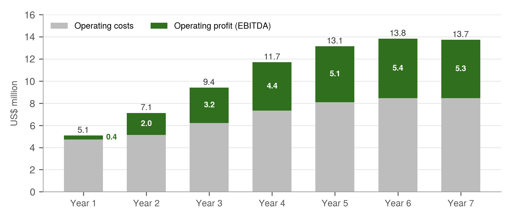
| US$ million | Year 1 | Year 2 | Year 3 | Year 4 | Year 5 | Year 6 | Year 7 |
|---|---|---|---|---|---|---|---|
| Pupils | 225 | 338 | 450 | 562 | 638 | 675 | 675 |
| Revenue | 5.08 | 7.12 | 9.41 | 11.70 | 13.14 | 13.82 | 13.73 |
| Operating costs | 4.72 | 5.13 | 6.20 | 7.33 | 8.08 | 8.45 | 8.45 |
| Operating profit (EBITDA) | 0.37 | 1.99 | 3.21 | 4.36 | 5.06 | 5.36 | 5.28 |
| Depreciation | 0.86 | 0.86 | 0.86 | 0.86 | 0.86 | 0.56 | 0.56 |
| Profit before tax | (0.50) | 1.13 | 2.34 | 3.50 | 4.19 | 4.80 | 4.72 |
| Corporate income tax (18%) | 0.00 | 0.11 | 0.42 | 0.63 | 0.75 | 0.86 | 0.85 |
| Net profit | (0.50) | 1.01 | 1.92 | 2.87 | 3.44 | 3.93 | 3.87 |
6.5 Break-even and Payback
The school would cover its operating costs with about 230 pupils, which is close to the first-year enrolment of 225. After that, every additional pupil adds most of their fee to profit, because many costs are fixed.
The investor would recover the full investment of US$23.1 million during the eighth year after opening, after tax (Figure 1, Section 1.3). Over 20 years, including the value of the land and buildings at the end of the period, the investment would return about 14% a year after tax. By year 20, the investor would have received about US$56.5 million in cash and would still own the campus.
6.6 Sensitivity Analysis
Figure 7 shows how the return changes if the main assumptions are less favourable. In every case tested, the investment remains profitable.
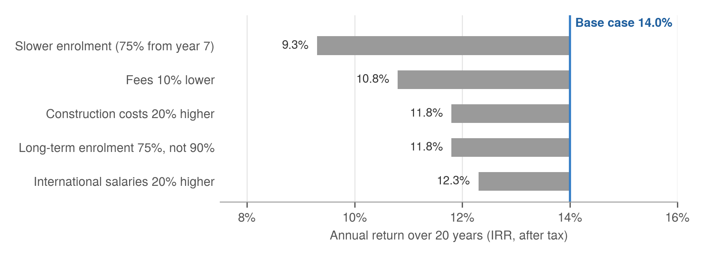
Enrolment and fees have the greatest effect on returns. If enrolment grows more slowly and stays at 75% of capacity, the return falls to about 9% and payback takes about eleven years. Higher construction costs or teacher salaries reduce the return, but less sharply. Early marketing, a strong head of school and a good location are therefore the most important ways to protect the investment.
6.7 Legal Structure and Tax Planning
The figures above assume a single for-profit company that owns the land, builds the campus and runs the school. Ukrainian investors often use other structures to reduce tax over a long period. The most common alternative for schools is to separate the property from the school:
- a property company owns the land and buildings and leases them to the school at a market rent;
- a non-profit school runs the school and, if entered in the Register of Non-profit Institutions, pays no corporate income tax; and
- a management company receives a fee for managing the school.
| Single for-profit company | Property company and non-profit school | |
|---|---|---|
| Corporate income tax on school profits | 18% | None, if registered as non-profit |
| Cash available to the investor | All profits, after tax | Rent, management fees and loan interest only |
| Surplus kept in the school after 20 years | None | about US$32 million, for reinvestment only |
| Payback from opening | about 8 years | about 10 years |
| Annual return over 20 years (IRR) | about 14% | about 10% |
| Other advantages | Simple; all profits can be distributed | Same status as the three market leaders; steady property income; funds for expansion |
The non-profit structure saves tax, but it does not increase the investor’s return, because a non-profit school cannot distribute its surplus. The investor can only receive payments that can be justified at market rates. The structure is suitable for an investor who values reputation, steady property income and long-term growth more than direct profit.
Other legal tax-planning tools were available in 2021. These included depreciation of buildings and equipment, losses carried forward against future profits, the VAT exemption for licensed educational services, and the reinvestment of profits in expansion. Proposals under discussion in 2021 would limit the use of carried-forward losses by large taxpayers. International holding structures, for example through Cyprus or the Netherlands, were also common. However, in 2020 Ukraine adopted new anti-avoidance rules (Law No. 466-IX), including rules on controlled foreign companies that take effect in 2022, which make these structures less attractive.
Recommendation. The client should take advice from a qualified Ukrainian tax specialist and a legal adviser before buying land, because the ownership structure is difficult to change later. This report does not provide tax or legal advice, and the options above should be confirmed by a specialist before the client relies on them.
7 What Could Go Wrong?
The investment faces one severe risk that the client cannot control: the conflict with Russia. Most other risks are moderate and can be reduced through careful planning, contracts and the structure of the investment.
7.1 Risk Assessment
Ten main risks were identified and assessed by their likelihood and their impact on the investment (Figure 8). The numbers in the figure refer to Table 16.
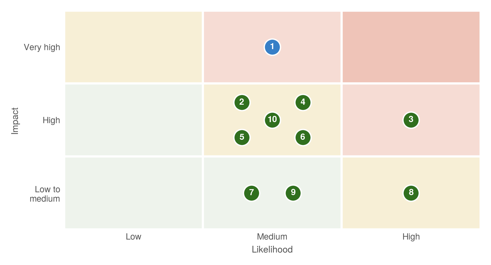
The most serious risk is an escalation of the conflict with Russia (risk 1). The conflict in eastern Ukraine has continued since 2014, and the build-up of Russian troops near the border in spring 2021 showed that it could escalate. A major escalation would cause many international families to leave Kyiv, reduce enrolment and could damage or close the campus. Unlike the other risks, it cannot be reduced significantly by the client.
Land acquisition (risk 3) is the most likely serious risk. Disputes over title, delays in permits and informal demands are common in Kyiv property transactions, and they could delay the project or increase its cost.
7.2 Risk Mitigation
Table 16 sets out each risk and the main actions to reduce it.
| No. | Risk | Likelihood | Impact | Main mitigation |
|---|---|---|---|---|
| 1 | Escalation of the conflict with Russia | Medium | Very high | Political-risk insurance (for example from MIGA or an export-credit agency); phased investment; plans for online teaching; reserves held outside Ukraine |
| 2 | Slower enrolment than planned | Medium | High | Strong launch marketing; experienced head appointed early; pre-enrolment before opening; competitive founding-family fees |
| 3 | Land acquisition and permits: disputed title, delays or informal demands | High | High | Full legal due diligence; reputable local partners; strict compliance with Ukrainian and international anti-corruption law; purchase only with clear title |
| 4 | Devaluation of the hryvnia | Medium | High | Fees set in US dollars; costs largely in US dollars; reserves held in hard currency |
| 5 | Construction cost overruns and delays | Medium | High | Fixed-price contract with an experienced contractor; 10% contingency; independent project manager |
| 6 | Recruitment and retention of international teachers | Medium | High | Pay above the Kyiv market; housing; recruitment through established agencies; two-year contracts with retention bonuses |
| 7 | Response from competitors, such as fee cuts or new campuses | Medium | Low to medium | Clear differences in campus, location and curriculum; strong university results |
| 8 | Pandemic disruption | High | Low to medium | Online teaching from day one; clear terms and conditions on remote learning and fees |
| 9 | Changes in education, tax or regulatory law | Medium | Low to medium | Specialist legal and tax advisers; membership of business associations such as the American Chamber of Commerce |
| 10 | Weak reputation in the early years, before results are proven | Medium | High | Experienced leadership; early Cambridge results; COBIS and CIS accreditation; university guidance office |
Several of these actions are already included in the recommended plan, such as fees in US dollars, the contingency in the construction budget and the deliberately high pay for international teachers. Others, such as political-risk insurance and a reserve fund, would add cost but would protect the investment against the most serious outcomes.
The client should proceed only if it can accept the risk of a severe loss in the event of a major escalation of the conflict. If this risk is not acceptable, the client could consider a smaller, leased model first (Section 5.1), and build a permanent campus once conditions are more stable.
8 What Happens Next?
If the client decides to proceed, the school could open in September 2024. The project would pass through four decision points, so that the largest sums are committed only when the main risks have been reduced.
8.1 Roadmap from Decision to Opening
The project would take about three years from the investment decision to opening day (Figure 9). Construction is the longest stage, but recruitment, admissions and accreditation must begin well before the building is finished.
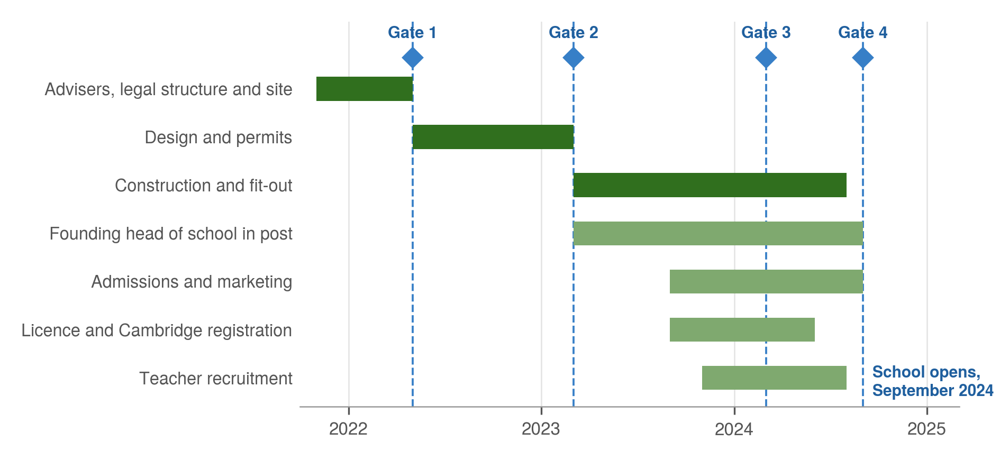
The building programme and the school programme run in parallel from 2023. The founding head of school should be in post 18 months before opening, so that he or she can lead admissions, recruit teachers and prepare for accreditation.
8.2 Decision Points
The investment is divided into four stages. At each decision point, the client should confirm that the conditions in Table 17 are met before releasing the next stage of funding. The client should also review the political and security situation at each point.
| Decision point | Timing | Conditions to proceed | Funding released |
|---|---|---|---|
| Gate 1: Buy the land | May 2022 | Site with clear legal title; legal due diligence complete; legal structure agreed with tax advisers; planning conditions confirmed | About US$6.0 million (land) |
| Gate 2: Start construction | March 2023 | Construction permits granted; fixed-price contract signed; costs confirmed by a quantity surveyor; founding head appointed | About US$15.6 million (construction, fit-out and fees) |
| Gate 3: Confirm the opening | March 2024 | At least 150 pupils pre-enrolled (two thirds of the first-year target); key teachers under contract; licence application submitted | About US$1.5 million (pre-opening costs) |
| Gate 4: Open the school | September 2024 | Ministry licence and Cambridge registration granted; building approved for use; staff in post | Operating budget |
If pre-enrolment at Gate 3 is lower than expected, the school could still open with early years and primary classes only, and add the secondary years over the following two years. This would reduce staffing costs in the first years while the school builds its reputation.
8.3 Immediate Next Steps
This report recommends that the client takes the following steps in the next three months:
- Confirm the decision and the budget, including a reserve for cost increases and slower enrolment.
- Appoint specialist advisers: a Ukrainian education lawyer, a tax specialist and an independent project manager.
- Decide the legal structure for owning the land and running the school (Section 6.7).
- Start the site search with property agents in the two suggested zones (Section 3.5).
- Confirm the costs of land and construction with a quantity surveyor.
- Contact Cambridge Assessment International Education to confirm the registration process and timeline.
- Begin the search for a founding head of school through specialist international recruitment agencies.
- Assess political-risk insurance and other ways to protect the investment against escalation of the conflict.
Taken together, these steps would allow the client to make the first major commitment, the purchase of land, with a clear view of the costs, the legal position and the risks.
Part 2: Research Annex
The annexes that follow set out the research on which the client decision report is based. They are written for readers who wish to examine the evidence in greater depth, and they cite their sources in the text. Full references are listed in Annex G.
Annex A Ukraine’s Economy
A.1 Economic Overview
Since independence in 1991, Ukraine’s economic trajectory has been marked less by sustained convergence with its European neighbours than by a recurring cycle of expansion and abrupt contraction (Carnegie Endowment, 2012). The dissolution of Soviet supply chains, hyperinflation and delayed structural reform produced a collapse in output during the 1990s, from which recovery began only at the turn of the century. Between 2000 and 2008, growth averaged around 7% a year, driven principally by high world prices for steel and agricultural commodities and by rapid expansion of domestic credit.
This expansion proved fragile. The global financial crisis reduced real GDP by almost 15% in 2009, and the political upheaval of 2013 to 2014, the annexation of Crimea and the conflict in the Donbas caused a further cumulative contraction of approximately 16% in 2014 and 2015. Over the same period, the hryvnia depreciated from around UAH 8 per US dollar in 2013 to approximately UAH 24 by the end of 2015, sharply reducing GDP measured in dollars (Figure A1). A gradual recovery from 2016, with growth of between 2.4% and 3.4% a year, was interrupted by the COVID-19 pandemic, which reduced real output by 4% in 2020 (State Statistics Service of Ukraine, 2021) and prompted a new Stand-By Arrangement with the International Monetary Fund worth US$5 billion (IMF, 2020).
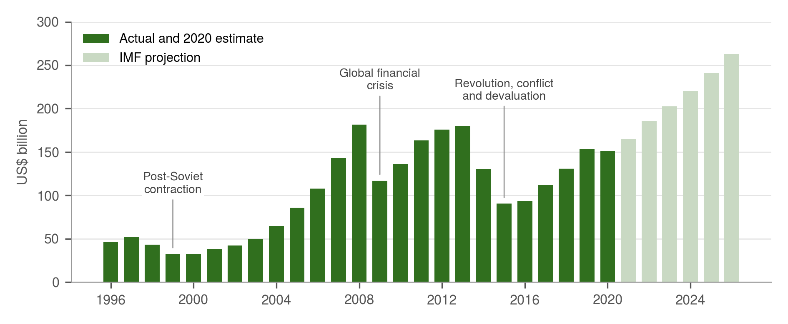
In 2020, nominal GDP amounted to approximately US$155.6 billion, or roughly US$3,700 per person, one of the lowest levels in Europe (State Statistics Service of Ukraine, 2021). The IMF’s April 2021 estimate, shown in Figure A1, was slightly lower at US$151.5 billion. Major index providers classify Ukraine as a frontier or standalone market rather than as an emerging market, reflecting limited capital-market depth and persistent concerns about governance, the rule of law and corruption. For the purposes of this report, the most important implication is that the pool of households able to afford premium school fees is small relative to the population, and highly concentrated in Kyiv.
Nonetheless, several reforms enacted after 2014 have improved the outlook. These include the stabilisation of the banking sector, the introduction of an inflation-targeting regime by the National Bank of Ukraine, the decentralisation of public finances to local communities and, from July 2021, the opening of the agricultural land market. The IMF projected nominal GDP growth to around US$260 billion by 2026, although such projections have historically been vulnerable to political and external shocks.
A.2 Key Industries: Metallurgy, Agriculture, IT and Green Energy
Agriculture is Ukraine’s most important export sector. It contributes around 9 to 10% of GDP and accounted for approximately 45% of merchandise exports in 2020, worth about US$22 billion (Ukrainian Agribusiness Club, 2021). Ukraine is the world’s largest exporter of sunflower oil and among the leading exporters of maize, wheat and barley (DLF, 2021). Large agricultural holdings have attracted significant foreign investment, and the liberalisation of the land market is expected to increase both productivity and land values. The sector generates substantial foreign-currency income but employs a declining share of the workforce.
Mining and metallurgy remain central to the industrial economy. Ukraine holds some of the world’s largest iron-ore reserves and produced 20.6 million tonnes of steel in 2020, which placed it eleventh among the world’s steel producers (World Steel Association, 2021). GMK Center (2021) estimates the total contribution of mining and metallurgy at 10.6% of GDP in 2019, of which 5.2% was generated directly by the sector and the remainder by related industries and the spending of its employees. The sector remains one of the country’s largest sources of export earnings. The sector is, however, exposed to volatile world prices, ageing capital stock and the loss of production capacity in the occupied areas of the Donbas.
Information technology has been the most dynamic sector of the past decade. Exports of IT services exceeded US$5 billion for the first time in 2020, an increase of around 20% on 2019, and represented approximately 8.3% of total exports (BRDO, 2021). The number of IT specialists rose from about 91,000 in 2015 to an estimated 200,000 in 2019 (N-iX, 2019). Salaries in the sector are several times the national average and are typically paid in US dollars, which makes IT professionals, many of whom live in Kyiv, a core market for premium education.
Green energy expanded rapidly after 2015 under a generous feed-in tariff, and the Energy Strategy of Ukraine envisages that renewable sources will provide around a quarter of primary energy supply by 2035. Payment arrears to producers and retroactive cuts to the feed-in tariff in 2020 have, however, undermined investor confidence. The sector is of indirect relevance to this report, principally as a source of foreign investment and of international professionals living in Kyiv.
A.3 Remittances and Emigration
Labour migration has become one of the defining features of the Ukrainian economy. Official estimates put the number of Ukrainians working abroad at between 2.7 and 3.2 million in 2018 and 2019, equivalent to roughly one in seven wage earners (Ministry of Social Policy of Ukraine, 2019; National Bank of Ukraine, 2020). Poland has become the principal destination, with almost one million Ukrainian workers in 2019, followed by Russia, Italy and the Czech Republic (PISM, 2020). The resulting flow of remittances has grown substantially since 2014. According to the National Bank of Ukraine, personal remittances reached approximately US$11 to 12 billion a year between 2018 and 2020, equivalent to about 8.5% of GDP in 2018 (Figure A2).
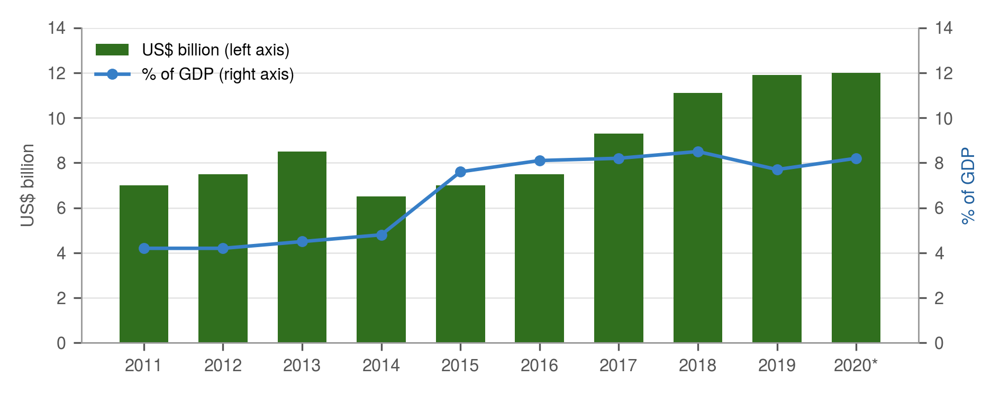
Research on household behaviour indicates that, once basic consumption needs are met, remittance income is increasingly directed towards long-term investments, most notably housing and education (Khomutenko, 2016). Remittances therefore contribute both to the growth of the middle class and to demand for private schooling and English-language tuition.
Emigration also carries costs. The departure of skilled workers, particularly in medicine, engineering and IT, has created shortages in several professions, and the teaching profession is no exception. For a school that intends to employ Ukrainian teachers of high quality, this reinforces the need for competitive salaries and professional development.
A.4 Demographic Trends
Ukraine’s population has declined from around 52 million in the early 1990s to approximately 41.6 million in January 2021, excluding Crimea and the temporarily occupied areas (State Statistics Service of Ukraine, 2021). The last national census was conducted in December 2001, so current estimates rely on registration data and are subject to considerable uncertainty, particularly with regard to emigration.
Two processes drive the decline. First, deaths have exceeded births in every year since the early 1990s, and the gap widened markedly after 2015 as the number of births fell from approximately 520,000 in 2012 to under 300,000 in 2020 (Figure A3). The total fertility rate fell to around 1.2 children per woman, among the lowest in Europe. Second, net emigration has continued, although its scale is difficult to measure.
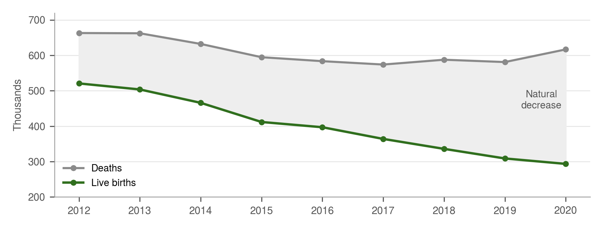
The demographic outlook has been the subject of considerable public debate. Some commentators have argued that return migration, pro-natal policies and economic recovery could reverse the decline within a decade. Official and international projections, however, including the medium variant of the United Nations World Population Prospects (2019), anticipate continued contraction over the coming decades. This report therefore adopts the more cautious view.
For the proposed school, the national trend matters less than the position of Kyiv. The capital continues to attract internal migrants, particularly young professionals and families from other regions, and its registered population of almost three million is widely considered to understate the number of residents. The cohorts that will enter the school between 2024 and 2030 have already been born, and in Kyiv they are likely to remain broadly stable even as they contract nationally.
Annex B The Ukrainian Education System
B.1 Structure: the Transition from 11 to 12 Years
The structure of Ukrainian schooling is in the midst of its most significant reform since independence. Under the Law on Education (2017) and the Law on Complete General Secondary Education (2020), complete general secondary education is being extended from 11 to 12 years and reorganised into three cycles (Table B1). The extension applies to pupils who entered Grade 1 in September 2018, the first cohort of the New Ukrainian School, who will complete their schooling around 2030. Until then, school leavers continue to finish after 11 years, typically at the age of 17.
| Cycle | Grades | Typical ages | Notes |
|---|---|---|---|
| Pre-school education | Not applicable | 3 to 6 | Optional, except for a final preparatory year |
| Primary education | 1 to 4 | 6 to 10 | First cycle of the New Ukrainian School since 2018 |
| Basic secondary education | 5 to 9 | 10 to 15 | Compulsory; ends with state final attestation |
| Specialised (profile) secondary education | 10 to 12 | 15 to 18 | Academic or vocational pathways; currently Grades 10 and 11 only |
| Higher education | Bachelor’s, master’s and doctoral levels | 17 or 18 onwards | Admission by the External Independent Evaluation (ZNO) |
The transition has a direct bearing on international comparability. Ukrainian school leavers have historically been a year younger than their peers in most European systems and have often been required to complete a foundation year before entering universities in the United Kingdom and elsewhere. International programmes, by contrast, are designed to run to the age of 18. This disparity constitutes a practical advantage for international schools, whose graduates can apply directly to foreign universities.
Admission to Ukrainian universities is determined by the External Independent Evaluation (ZNO), a set of standardised national tests administered by the Ukrainian Centre for Educational Quality Assessment since 2008. The ZNO is widely regarded as one of the most successful anti-corruption reforms in Ukrainian education, having replaced admission procedures conducted by individual universities.
B.2 Government Funding
Public expenditure on education in Ukraine has consistently been high by international standards, at approximately 6% of GDP compared with an OECD average of around 5% (OECD, 2019; World Bank, 2019). In absolute terms, this amounted to roughly US$9 to 10 billion in 2019. Responsibility for funding has been progressively decentralised: the state budget finances teachers’ salaries through an educational subvention, while local communities are responsible for buildings, utilities and other operating costs.
High expenditure has not, however, translated into commensurate outcomes. A substantial share of the budget is absorbed by an extensive network of small schools, many of them in rural areas with declining enrolment. As a result, the national ratio of pupils to teachers is approximately nine to one, considerably more favourable than the OECD average, while urban schools, particularly in Kyiv, frequently operate with classes of 30 pupils or more. The World Bank (2019) has accordingly identified the optimisation of the school network, rather than an increase in funding, as the principal lever for improving quality.
Private expenditure on education, including tuition at private schools and universities, private tutoring and language courses, is estimated at around 1% of GDP. Much of it is spent informally and is therefore difficult to measure with precision.
B.3 The New Ukrainian School Reform
The New Ukrainian School (NUS) is the central element of the government’s education reform. Launched as a concept in 2016, piloted in 100 schools from September 2017 and introduced in every Grade 1 class in September 2018, it seeks to move Ukrainian schooling from the memorisation of knowledge towards the development of competences, in line with the European framework of Key Competences for Lifelong Learning (European Parliament and Council, 2006). The reform comprises nine key components:
- new educational content based on the competences needed for success in life;
- motivated teachers who have the freedom to work creatively and to develop professionally;
- an integrated approach to learning that also develops values;
- decentralisation and effective management that give schools real autonomy;
- teaching based on partnership between pupils, teachers and parents;
- a focus on the needs of each pupil, that is, child-centred education;
- a new school structure that allows pupils to master the new content;
- fair distribution of public funds to ensure equal access to quality education; and
- a modern learning environment, both within and beyond the school building.
Source: Ministry of Education and Science of Ukraine (2016).
The reform has been broadly welcomed by teachers and parents, but its implementation has been uneven. Its success depends heavily on the retraining of teachers, the provision of new learning materials and the renovation of school buildings, all of which require sustained investment. Its effects on outcomes will not be measurable for several years. For private and international schools, the reform is significant because its child-centred philosophy is broadly consistent with international curricula, which facilitates the combination of the two.
B.4 PISA Results and English Proficiency
Ukraine participated in the OECD Programme for International Student Assessment (PISA) for the first time in 2018. Its results were below the OECD average in all three domains, but by a smaller margin than might be expected given its level of income (Table B2).
| PISA 2018 | Ukraine | OECD average |
|---|---|---|
| Reading: mean score | 466 | 487 |
| Reading: share of pupils at Level 2 or above | 74% | 77% |
| Mathematics: mean score | 453 | 489 |
| Mathematics: share of pupils at Level 2 or above | 64% | 76% |
| Science: mean score | 469 | 489 |
| Science: share of pupils at Level 2 or above | 74% | 78% |
Two features of the results are particularly relevant. First, the gap between pupils in large cities and those in villages was substantial (Ukrainian Centre for Educational Quality Assessment, 2019), which suggests that Kyiv’s pupils perform considerably above the national average. Second, socio-economic background was a strong predictor of performance: advantaged pupils outperformed disadvantaged pupils in reading by 90 score points (OECD, 2019), reinforcing the importance that affluent families attach to the quality of their children’s schooling.
English proficiency remains a notable weakness. In the 2020 EF English Proficiency Index, Ukraine ranked 44th of 100 countries, well behind Poland (16th) and most member states of the European Union (EF Education First, 2020). The government has responded by setting a target that school leavers should reach level B1 of the Common European Framework of Reference in a foreign language, and English is a core subject of the ZNO. This combination of a recognised weakness and a rising requirement underpins the large private market for English tuition described in Annex C and constitutes the main reason why Ukrainian families seek English-medium schooling.
Annex C The Private Education Market
C.1 Private Schools: Numbers and Enrolment
Private schooling in Ukraine remains a small segment of the system, but one that has expanded rapidly since 2014. In October 2021, 320 private schools held an active licence, representing approximately 2% of the 16,525 schools in the country (Opendatabot, 2021). The number of pupils attending private schools increased by 174.5% between 2014/15 and 2020/21, and the number of their teachers by 89.6% (Shevchenko, 2021).
According to the same registry data, licensed private schools can accommodate 119,512 pupils, compared with 4.64 million in community and state schools. Private schools therefore account for no more than about 2.5% of capacity, and a smaller share of actual enrolment. This share is modest by international standards, but the market is heavily concentrated: Kyiv alone had 108 licensed private schools in 2021, approximately one in five of all schools in the capital, compared with roughly one in fifty nationally.
| Indicator | Value | Source |
|---|---|---|
| Licensed private schools, October 2021 | 320 (about 2% of all schools) | Opendatabot (2021) |
| Licensed capacity of private schools | 119,512 pupils (about 2.5% of total capacity) | Opendatabot (2021) |
| Growth in private-school pupils, 2014/15 to 2020/21 | +174.5% | Shevchenko (2021) |
| Growth in private-school teachers, 2014/15 to 2020/21 | +89.6% | Shevchenko (2021) |
| Licensed private schools in Kyiv, October 2021 | 108 (19.4% of Kyiv schools) | Opendatabot (2021) |
| Registered private schools in Kyiv city and region, 2018 | 134 | Ministry of Education and Science (2018) |
The growth of private schooling reflects two complementary forces. On the demand side, dissatisfaction with large classes, outdated buildings and informal payments in state schools has encouraged families with sufficient means to seek alternatives. On the supply side, the Law on Education (2017) clarified the legal status of private institutions and simplified their access to licensing. Most private schools are small, with between 70 and 700 pupils, and follow the State Standard with additional instruction in English or German.
C.2 International Schools
In 2021, seven schools in Ukraine described themselves as international. Only three of these, all located in Kyiv, offered programmes of the International Baccalaureate, among them Kyiv International School and Pechersk School International. Together with the British International School Ukraine, these schools form the established premium segment, and each enrolled more than 500 pupils in 2021 (Section 2.2). The remaining schools comprise national schools serving particular expatriate communities, faith-based or community schools, and private schools that use the term “international” without holding recognised international accreditation.
The term “international school” has no legal definition in Ukraine. Its use is therefore unregulated, and the accreditation claimed by some schools can be difficult to verify. Recognised international accreditation, from bodies such as the Council of International Schools, the International Baccalaureate Organization or Cambridge Assessment International Education, is accordingly the most reliable indicator of quality available to parents (Annex E).
C.3 English Language Schools
The market for English tuition is considerably larger and more fragmented than the market for private schooling. It encompasses national and international language-school chains, small local providers, online platforms and a very large number of individual tutors, many of whom are registered as sole traders. Its size is difficult to estimate with confidence, because much of the activity is informal. Demand is driven by the requirements of the ZNO, the government’s B1 target for school leavers, the needs of employers in the IT and service sectors, and preparation for study abroad.
The market has also become more professional: a growing number of teachers hold internationally recognised qualifications, such as the Cambridge CELTA, and several schools operate as authorised Cambridge English examination centres. For the proposed school, the language market is significant in two respects: it demonstrates the willingness of Ukrainian families to pay for English, and it offers a source of qualified English teachers and assistants.
C.4 Fees in Ukraine and Abroad
Few private schools in Ukraine publish their fees, which are commonly negotiated and increase with each grade. The figures in Table C2 are therefore based on enquiries made for this report and on published school information. They exclude additional charges, which at private schools may reach US$2,000 a year and at international schools approximately US$4,000.
| Market | Average annual tuition (US$) | Range (US$) |
|---|---|---|
| Private schools, Kyiv | 4,200 | 3,300 to 8,000 |
| Private schools, Kharkiv | 3,800 | 2,200 to 5,160 |
| Private schools, Odesa | 3,750 | 3,100 to 5,400 |
| Private schools, Lviv | 3,490 | 3,100 to 5,600 |
| International schools, Kyiv | Not available | 11,000 to 30,000 or more |
| Schools abroad for international pupils: United States | 32,000 | 26,000 to 61,000 |
| Schools abroad for international pupils: Canada | 31,000 | 26,100 to 57,000 |
| Schools abroad for international pupils: United Kingdom | 45,000 | 34,000 to 67,000 |
| Schools abroad for international pupils: Switzerland | 46,000 | 34,000 to 74,000 |
Two observations follow from these data. First, the difference between regional cities is modest, whereas Kyiv commands both the highest average and by far the widest range. Second, there is a pronounced gap between the most expensive private schools and the least expensive international schools, and an even wider gap between international schools in Kyiv and schools abroad. Both gaps are discussed in Section 3.4.
C.5 Ukrainian Students Studying Abroad
The number of Ukrainians studying at foreign universities has grown substantially over the past decade. According to CEDOS (2019), 77,424 Ukrainian students were enrolled at foreign universities in 2016/17, more than three times the figure of nine years earlier, and the number was projected to exceed 83,000 in 2017/18. Poland alone hosted 37,829 Ukrainian students in 2017/18, almost half of the total (Perspektywy Education Foundation, 2018). The growth has been concentrated in Central and Eastern Europe, where tuition is low, admission requirements are accessible and the labour market is open to graduates. Enrolment in Western Europe and in English-speaking countries has grown more slowly, reflecting higher costs and more demanding admission requirements, including proficiency in English (Figure C1).
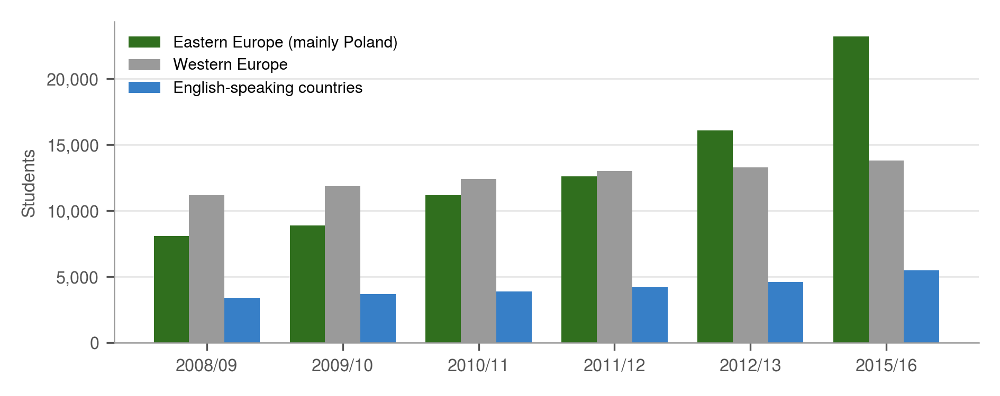
Smaller numbers of Ukrainian pupils attend boarding schools in the United Kingdom, Switzerland and North America, but reliable data on school-level study abroad are not available. The pattern of tertiary mobility is nonetheless instructive. Families who aspire to universities in Western Europe and English-speaking countries require precisely the combination of English-medium instruction and internationally recognised qualifications that the proposed school would offer. A school in Kyiv that enables pupils to apply directly to such universities would address a demand that is currently met largely by sending children abroad.
Annex D Parent Survey
D.1 Method and Sample
The survey was designed to obtain broad but simple information on the preferences of Kyiv parents when choosing a school, and in particular on the balance they strike between the education provided and its cost. It was administered online in 2021 as a bilingual questionnaire in English and Ukrainian, comprising ten multiple-choice questions, five of which included an “other” option. A final optional section invited respondents to comment in their own words. Responses were anonymous, and all metadata and identifying information were removed.
Eligibility was restricted to parents of at least one school-age child attending school in Kyiv, or attending school abroad after previously attending school in Kyiv. The access link was distributed to 160 parents through personal and professional networks, and the survey remained open for three weeks. Twenty-three parents completed the questionnaire, a response rate of approximately 14%.
The results should be interpreted with caution. The sample is small and was obtained by convenience rather than by random selection; it is therefore likely to over-represent families already engaged with fee-paying education, and it cannot be used to estimate market shares or the prevalence of particular views in the wider population. Its value lies in identifying the priorities and concerns of the families most relevant to the proposed school. Where respondents could select more than one answer, percentages may total more than 100%.
D.2 Questionnaire
The questionnaire asked respondents about the number of their school-age children, the annual fees they pay per child and the type of school their children attend. It then asked the following questions, shown here with their original numbering and wording. Each question was presented in both English and Ukrainian.
- Why did you choose this school? Choose one or more answers.
- What do you dislike about this school? Choose one or more answers.
- What do you like about this school? Choose one or more answers.
- What is your opinion of the teaching at this school? Choose one or more answers.
The remaining questions concerned background information and are not reported separately.
D.3 Full Results
Family size. Of the 23 respondents, 13 (56%) had one child of school age, 9 (39%) had two, and 1 (4%) had three or more. Respondents with one child tended to report higher fees per child, whereas those with two children often spent a larger total budget divided between them.
| Annual fees per child | Respondents | Share | Type of school attended |
|---|---|---|---|
| About US$2,000 | 7 | 30% | State school (additional charges) |
| US$2,000 to US$7,000 | 8 | 35% | Private school following the national curriculum |
| US$10,000 to US$20,000 | 7 | 30% | Private school with international elements, such as a language focus, international examinations or routes to study abroad |
| US$30,000 or more | 1 | 4% | International school with international staff and examinations |
| Total | 23 | 100% |
Fees. Families whose children attended state schools reported paying around US$2,000 a year in additional charges, although the precise purposes of these payments could not be determined from the question. Families paying between US$10,000 and US$20,000 described schools that offered international elements and were explicitly seeking routes to education abroad (Table D1).
Reasons for choosing a school. Proximity and reputation were the dominant considerations, cited by 52% and 48% of respondents respectively (Figure D1). Recommendations from other parents were also important, whereas information obtained online and agencies played almost no role, which underlines the importance of word of mouth in this market.
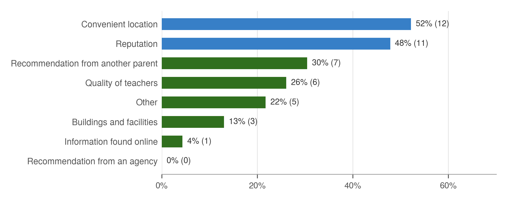
Likes and dislikes. The quality of teaching was the most frequently cited strength of current schools (52%), followed by buildings and facilities (30%). Buildings and classroom facilities were, however, also the most frequently cited weakness (48%), followed by the quality of teaching (30%) and the grading of tests and examinations (26%). The full distribution is shown in Figure 2 (Section 2.4).
Opinion of teaching. Just over half of respondents considered their child’s teachers well qualified, and around a third rated the teaching as acceptable (Figure D2). A minority reported that teachers did not give their child sufficient help (17%) or that teaching was poor overall (13%).
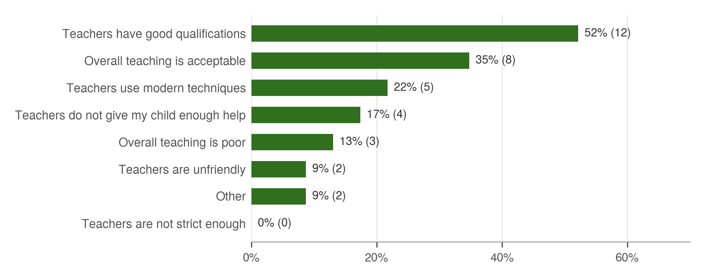
Taken together, the results suggest that families in this segment value qualified teachers and a convenient location above all, and that dissatisfaction with school buildings is widespread even among those paying substantial fees. Both findings inform the recommendations in Part 1.
Annex E Accreditation Bodies
Internationally recognised accreditation is the principal means by which a school in Ukraine can demonstrate its international standing, since the term “international school” has no legal definition. The bodies described below differ considerably in their requirements, timescales and costs, both for obtaining recognition and for maintaining it. Their processes typically involve detailed examination of governance, curriculum, staffing and facilities, followed by periodic re-evaluation.
E.1 Cambridge Assessment International Education and Cambridge English
Cambridge Assessment International Education, part of the University of Cambridge, provides a complete curriculum and assessment pathway for pupils aged 5 to 19: Cambridge Primary, Cambridge Lower Secondary, Cambridge IGCSE (International General Certificate of Secondary Education) and Cambridge International AS and A Levels. IGCSE and A Level qualifications are widely accepted for university admission, particularly in the United Kingdom and the Commonwealth, and increasingly across continental Europe and North America.
Registration as a Cambridge school typically takes between three and six months from application to approval (Cambridge Assessment International Education, 2017). The process examines the school’s curriculum planning, staffing, facilities and capacity to administer examinations securely. Costs vary with the scope of programmes offered and comprise registration and annual fees, together with examination entry fees that are normally passed on to families. These costs can be readily incorporated into the school’s operating budget and fee structure.
Cambridge English, a separate part of the same organisation, offers a suite of English-language examinations for all ages, from the Young Learners Starters level for children of around six years of age to the advanced qualifications taken by older pupils. Schools may either enter candidates through an external centre or register as an examination centre themselves. Registration as a centre is relatively straightforward, takes a few months and costs approximately US$5,000, a sum that is recovered through candidates’ examination fees; in 2021, entry fees in Ukraine started from approximately UAH 1,200 (Cambridge Assessment English, 2021). Becoming an authorised preparation centre involves little more than administrative effort. Either form of association provides external validation of the quality of English teaching and has considerable marketing value.
E.2 International Baccalaureate
The International Baccalaureate Organization (IBO) is an independent foundation, based in Geneva, which is entirely separate from Cambridge. It offers four programmes: the Primary Years Programme (ages 3 to 12), the Middle Years Programme (ages 11 to 16), the Diploma Programme (ages 16 to 19) and the Career-related Programme. The Diploma Programme is widely regarded as one of the most rigorous pre-university qualifications and is recognised by universities worldwide.
Authorisation is considerably more demanding than Cambridge registration. A school must first become a candidate school, implement the programme under the guidance of the IBO, train its teachers in IB methods and undergo an authorisation visit. The process typically takes two to three years for each programme, and both candidacy and authorised schools pay annual fees. In 2021, three schools in Kyiv offered IB programmes, of which Pechersk School International was the only one to offer the full sequence from the Primary Years Programme to the Diploma.
E.3 Council of International Schools and European Associations
Europe has a wide range of associations serving international schools, their leaders and their teachers. The most significant for accreditation purposes is the Council of International Schools (CIS), whose accreditation evaluates the school as a whole against international standards and is widely recognised by parents, universities and other schools. CIS accreditation is a multi-year process involving a self-study and evaluation visits, and typically takes three to five years. Other associations include the International Schools Association (ISA), the Association of International Schools in Europe and, for British-curriculum schools, the Council of British International Schools (COBIS). Annual membership fees for the main associations ranged from approximately US$500 to more than US$8,000 in 2021, and most require prior recognition by a national or international awarding body.
Several European countries, notably France, Germany, the Netherlands and Turkey, also support schools in Ukraine that follow their national curricula. These schools commonly operate a dual model, in which pupils take both Ukrainian and foreign examinations, and they often receive funding from the government of the relevant country. They are not considered further in this report.
E.4 US and Canadian Accreditation
In the United States, education is a responsibility of the individual states, each of which licenses and regulates private providers according to its own rules; requirements and costs therefore vary widely (US Department of Education, 2021). The states of New York and Washington were examined as examples. American schooling follows a K–12 structure, culminating in a high-school diploma awarded on the basis of the Grade Point Average (GPA), accumulated through continuous assessment, together with standardised tests such as the PSAT/NMSQT, the SAT and the ACT for university admission. Registration fees for overseas schools seeking state approval were approximately US$20,000, excluding legal and agency costs and the annual costs of licence maintenance, inspection and examinations.
Canada is a federation of ten provinces and three territories, each of which is responsible for education. Several provinces, such as Manitoba, accredit “affiliate” or offshore schools that teach the provincial curriculum and award the provincial diploma. Most require prior national accreditation before the process can begin, which typically takes between 12 and 24 months. Costs are not published, but available indications suggest approximately C$15,000, excluding annual costs. According to research for this report, only one school in Ukraine had obtained accreditation from a Canadian provincial ministry by 2021.
E.5 ISO 21001
ISO 21001:2018 is the international standard for management systems in educational organisations (International Organization for Standardization, 2018). Certification by an accredited certification body assesses all aspects of the school’s management system, from administration to teaching and curriculum, and follows a three-year cycle with annual surveillance audits. Costs vary by country and by the size of the organisation, but averaged approximately US$15,000 in 2021. According to research for this report, only two schools in Ukraine held ISO 21001 certification at that time. The standard is not a substitute for curriculum accreditation, but it is valued by corporate clients and can support applications to other accrediting bodies.
| Body | What it provides | Typical time | Indicative cost (2021) |
|---|---|---|---|
| Cambridge Assessment International Education | Curriculum and qualifications from age 5 to 19 | 3 to 6 months | Registration and annual fees; examination fees paid by families |
| Cambridge English | English-language examinations; examination-centre status | A few months | About US$5,000 to become a centre |
| International Baccalaureate Organization | PYP, MYP, Diploma and Career-related programmes | 2 to 3 years per programme | Candidacy and annual fees |
| Council of International Schools | Whole-school international accreditation | 3 to 5 years | Membership US$500 to US$8,000+ a year, plus evaluation visits |
| US state authorities | State approval and US high-school diploma | Varies by state | About US$20,000, plus annual costs |
| Canadian provincial ministries | Provincial curriculum and diploma | 12 to 24 months | About C$15,000, plus annual costs |
| ISO certification bodies | ISO 21001 management-system certification | Under 1 year | About US$15,000; three-year cycle |
Annex F Staffing, Visa and Property Data
The data in this annex were collected for this report in 2021 through enquiries with schools, recruitment agencies, property agents and official sources. They provide the inputs for the staffing and cost assumptions in Sections 5 and 6.
F.1 Teacher and Leadership Salaries
For the purposes of this report, teaching staff are defined as holders of a bachelor’s degree or higher from a recognised institution in Ukraine or abroad. Salaries of Ukrainian teachers with domestic qualifications vary widely according to length of service, responsibilities and contact hours. International schools generally require foreign teachers to hold degrees from universities in English-speaking countries, duly attested.
| Category | Monthly salary (US$) | Notes |
|---|---|---|
| Ukrainian teacher, private school | 500 to 1,300 | Teachers who also teach a foreign language earn about 10% more; no significant premium for age or gender |
| Ukrainian department head, private school | about 12% above teacher pay | Most senior staff earn 2 to 2.5 times the institutional average |
| Ukrainian teacher, international school | 750 to 1,450 | Higher end for holders of degrees from English-speaking universities |
| Foreign teacher, private school | 1,600 on average | Plus visa, residence permit, housing and medical costs |
| Foreign teacher, international school | 2,100 on average; 2,400 highest observed in Kyiv | As above |
| Foreign department head, international school | about 25% above teacher pay | Lower contact hours; a master’s degree is usually required |
| Head of school, international school | about three times base teacher pay, plus performance bonuses | Often holds a doctorate and a record of leadership in similar schools |
The financial model in Section 6 assumes an international teacher salary of US$3,000 a month, above the highest rate observed in 2021, in order to attract experienced staff away from established schools (Section 5.3).
F.2 Visa, Work Permit and Relocation Costs
Foreign teachers require a type D visa, a work permit and a temporary residence permit. Visa fees vary considerably by nationality because they are set on a reciprocal basis.
| Item | Cost (US$) | Notes |
|---|---|---|
| Type D visa, US citizens | about 190 | When the application is made before departure |
| Type D visa, UK citizens | over 800 | Fees for other nationalities vary |
| Work permit | about 460 | For one year |
| Pension fund payments | about 500 | As reported in 2021 |
| Administration (applications, notary, translation, photographs, transport) | about 300 | One-off |
| Health insurance | about 100 | Annual |
In total, these costs amount to between approximately US$1,500 and US$2,200 per teacher, depending on nationality. Together with flights and recruitment costs, they underpin the allowance of about US$4,000 a year per international teacher used in the financial model.
F.3 Teacher Housing
Housing, or a housing allowance with administrative support, is a standard condition of employment for international teachers and was provided by all international schools in Kyiv in 2021. The cost averaged approximately US$1,000 a month per teacher, ranging from about US$600 to US$1,200 depending on location. Rental prices fell during the COVID-19 pandemic but had resumed an upward trend by the second quarter of 2021.
F.4 Commercial Lease Rates and Construction Costs
Commercial rents in Kyiv vary according to the class of building: modern new-builds (class A), buildings constructed or renovated within the last 15 to 20 years (class B+), and older buildings, including those built before independence (class B and below). Rents fell sharply after the financial crisis of 2008 and remained broadly stable in the years before 2020 (Table F3).
| Building class | Lease rate (US$ per square metre a month) | Notes |
|---|---|---|
| Class A | 20 to 40; about 30 on average | Discounts available for long leases |
| Class B+ | 18 to 29; about 24 on average | Marginally higher refurbishment costs |
| Class B | 8 to 25; about 15 on average | Refurbishment costs about 18% higher than for class A |
These rates apply to commercial (office) premises and were used to assess the Entry and Mid models, which assume leased buildings. Converting older buildings to meet sanitary standards for schools is particularly costly, as is the conversion of buildings designed for residential use (Section 4.2).
The recommended High model assumes a purpose-built campus. Its construction cost is estimated at approximately US$1,000 per square metre, including building services, for about 10,000 square metres, and the land cost at approximately US$6 million for a site of 2.5 to 3 hectares, including acquisition costs (Section 6.1). These figures are the author’s estimates for 2021 and should be confirmed by a quantity surveyor and property agents once a site has been identified.
Annex G Sources
All sources were published, or their data relate to periods, no later than October 2021. Web addresses are given where available.
Economy, labour market and demography
- BRDO (2021). Ukraine’s export of IT services exceeded US$5 billion for the first time. Better Regulation Delivery Office, February 2021. brdo.com.ua
- Cabinet of Ministers of Ukraine (2017). Energy Strategy of Ukraine until 2035: Security, Energy Efficiency, Competitiveness.
- Carnegie Endowment for International Peace (2012). Underachiever: Ukraine’s Economy Since 1991. carnegieendowment.org/2012/03/09/underachiever-ukraine-s-economy-since-1991-pub-47451
- DLF (2021). Exports of agricultural products from Ukraine. DLF attorneys-at-law. dlf.ua
- GMK Center (2021). Contribution of the mining and metals sector to Ukraine’s economy in 2019–2020. April 2021. gmk.center
- International Monetary Fund (2020). IMF Executive Board approves 18-month US$5 billion Stand-By Arrangement for Ukraine. Press Release No. 20/239, 9 June 2020. imf.org
- International Monetary Fund (2021). World Economic Outlook Database, April 2021, via Statista (2021).
- Khomutenko, Y. (2016). Remittances and Households’ Investment.
- Ministry of Social Policy of Ukraine (2019). Estimate of Ukrainians employed abroad, reported in the Ministry of Finance macroeconomic review, July 2019.
- N-iX (2019). Ukrainian IT market: number of specialists and industry revenue. n-ix.com
- National Bank of Ukraine (2020). Inflation Report, January 2020.
- National Bank of Ukraine (2021). Balance of payments statistics: private remittances to Ukraine. bank.gov.ua
- Opendatabot (2021). Depopulation: births and deaths in Ukraine, 2010–2020, 9 March 2021, based on State Statistics Service data. opendatabot.ua/en/analytics/depopulation
- PISM (2020). Ukrainian Labour Migration to the EU during the COVID-19 Pandemic. Polish Institute of International Affairs, Bulletin No. 156, 23 July 2020. pism.pl
- State Statistics Service of Ukraine (2021). Gross domestic product in 2020; population as at 1 January 2021; natural population movement. ukrstat.gov.ua
- Statista (2021). Ukraine: gross domestic product from 1996 to 2026, based on IMF data. statista.com
- Ukrainian Agribusiness Club (2021). Agricultural exports of Ukraine in 2020, February 2021.
- United Nations, Department of Economic and Social Affairs (2019). World Population Prospects 2019.
- World Bank (2020). Personal remittances, received (% of GDP): Ukraine. data.worldbank.org
- World Steel Association (2021). Crude steel production by country, 2020, as reported by GMK Center, 2021.
Education system and private education
- CEDOS (2019). Ukrainian Students Abroad: Data up to the 2017/18 Academic Year. cedos.org.ua
- EF Education First (2020). EF English Proficiency Index 2020. ef.com/epi
- European Parliament and Council (2006). Recommendation on Key Competences for Lifelong Learning (2006/962/EC).
- Law of Ukraine No. 2145-VIII On Education, 5 September 2017.
- Law of Ukraine No. 463-IX On Complete General Secondary Education, 16 January 2020.
- Ministry of Education and Science of Ukraine (2016). The New Ukrainian School: Conceptual Principles of Secondary School Reform. mon.gov.ua
- Ministry of Education and Science of Ukraine (2018). Register of private general secondary education institutions, Kyiv city and region.
- OECD (2019). Education at a Glance 2019; GPS Education country profile: Ukraine. gpseducation.oecd.org
- OECD (2019). PISA 2018 Results, Volumes I–III, and Ukraine: Country Note. oecd.org/pisa
- Opendatabot (2021). One in Five Schools in Kyiv Is Private, 13 October 2021. opendatabot.ua/en/analytics/private-schools
- Perspektywy Education Foundation (2018). Study in Poland: Foreign Students in Poland 2018.
- Shevchenko, S. (2021). Changes in the Ukrainian educational field in the conditions of social uncertainty. Ukrainian Sociological Journal, 25, 17–36. doi:10.26565/2077-5105-2021-25-02
- Ukrainian Centre for Educational Quality Assessment (2019). National Report on the Results of PISA-2018. testportal.gov.ua
- WENR (2019). Education in Ukraine. World Education News and Reviews, June 2019. wenr.wes.org/2019/06/education-in-ukraine
- World Bank (2019). Review of the Education Sector in Ukraine: Moving toward Effectiveness, Equity and Efficiency.
Regulation, accreditation and tax
- Cabinet of Ministers of Ukraine (2015). Resolution No. 1187 of 30 December 2015, Licensing Conditions for Educational Activity.
- Cambridge Assessment English (2021). How to become a Cambridge English exam centre. cambridgeenglish.org
- Cambridge Assessment International Education (2017). Becoming a Cambridge School: Registration Process. cambridgeinternational.org
- Council of International Schools (2021). School membership and accreditation. cois.org
- Draft Law of Ukraine No. 5600 on amendments to the Tax Code (registered 2021).
- International Organization for Standardization (2018). ISO 21001:2018 Educational organizations: Management systems for educational organizations. iso.org/standard/66266.html
- International Schools Association (2021). isaschools.org; Association of International Schools in Europe (2021). aiseurope.org
- Law of Ukraine No. 466-IX on amendments to the Tax Code (anti-BEPS law), 16 January 2020.
- Manitoba Education (2021). Affiliate schools. edu.gov.mb.ca/k12/iep/aff_schools.html
- Ministry of Health of Ukraine (2020). Order No. 2205 of 25 September 2020, Sanitary Regulations for General Secondary Education Institutions, in force from 1 January 2021.
- New York State Education Department (2021). Non-degree-granting school licensing process. acces.nysed.gov
- US Department of Education (2021). State regulation of private schools. ed.gov
- Washington State Board of Education (2021). Private school approval. sbe.wa.gov
Schools and primary research
- Author’s enquiries with schools, recruitment agencies and property agents on fees, salaries, visa costs and lease rates, 2021.
- Author’s survey of Kyiv parents, 2021 (Annex D).
- British International School Ukraine (2021). britishschool.ua
- Kyiv International School (2021). kyiv.qsi.org
- Pechersk School International (2021). School website and published school information.
- US Department of State (2021). School fact sheets: Kyiv International School and Pechersk School International. 2017-2021.state.gov
Contact
Scott Harmer
Important notice. This report was prepared in October 2021 for a private client. It reflects information available, and market conditions prevailing, at that date. The financial projections are estimates based on stated assumptions and are not guarantees of future performance. This report does not constitute legal, tax or investment advice; the client should obtain independent professional advice before making any investment decision.